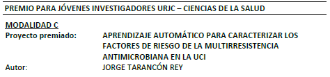

About me
Biomedical Engineer with a dynamic attitude who wishes to be part of a team in order to learn, whilst growing profesionally and personally. Especially interested in data science and machine learning fields.

Biomedical Engineer
- Birthday: 24 March 1998
- Phone: +34 646 093 766
- City: Madrid, Spain
- Age: 23
- Degree: University degree
- Email: si.jorgetarancon@gmail.com
Resume
Education
BACCALAUREATE DEGREE
2014 - 2016
Honor student. Average grade 9.56 out of 10
Real Colegio Santa Isabel-La Asunción (Madrid, Spain)
Internship
2019
West Attica University (Athens, Greece)
UNIVERSITY DEGREE IN BIOMEDICAL ENGINEERING
2016 - 2020
Universidad Rey Juan Carlos (Madrid, Spain)
University master's degree in Visual Analytics and Big Data
2021 -
Universidad Internacional de La Rioja
Professional Experience
BACKEND DEVELOPER
June 2019 - August 2020
West Attica University
- Development of a project of image preprocessing and decision support systems, during the Internship
BACKEND DEVELOPER
November 2019 - January 2020
Hospital Universitario del Sureste
- Rotation between the different services of the hospital and development of a machine learning project
Computer technician
August 2020 - Current
Hospital Universitario de Fuenlabrada
- Development of Big Data research projects in the clinical field
Publications
CASEIB student competition
2019
Textural and Morphological Features for Grading Brain Cancer Image
Diplomas
Social Council award for young researchers (2020)

Honor student in Bachelor’s thesis: Aprendizaje Automático para Caracterizar los Factores de Riesgo de la Multirresistencia Antimicrobiana en la UCI
Finalist and speaker of the Biomedical Engineering Competition at CASEIB 2019
B1.2 degree from Trinity College London grade 6
Total score of 680 in TOEIC exam
Level B2 of English according to the Internship level test
Honor student in baccalaureate in health sciences
Skills
Advanced kwnoledge of Python90%
Knowledge of R40%
Advanced knowledge of LaTeX90%
Advanced knowledge of Excel90%
Microsoft Office70%
Wolfram Mathematica60%
Power BI60%
SQL60%
HTML50%
CSS50%
JavaScript40%
Framework Django50%
Git60%
TOAD80%
HeidiSQL70%
I2b280%
Asditional Information
Information
Honor student in baccalaureate in health sciences
Internship in Athens (Erasmus + Prácticas) (2019)
Active and sporty person, who has been part of football teams since childhood
Type B driving license
Effective communication skills
Ability to learn swiftly
Great attention to detail
Willingness to travel
Courses
Machine Learning with Python, IBM (2019)
R Programming, Johns Hopkins University (2020)
Data Visualization With Python, IBM (2020)
Excel TOTAL, Escuela Directa (2020)
Power BI Essential Training, Gini Von Courter (2021)
Introduction to Git and GitHub, Google (2021)
SQL for Data Science, IBM (2021)
CS50s Web Programming with Python and JavaScript, HarvardX (2021)